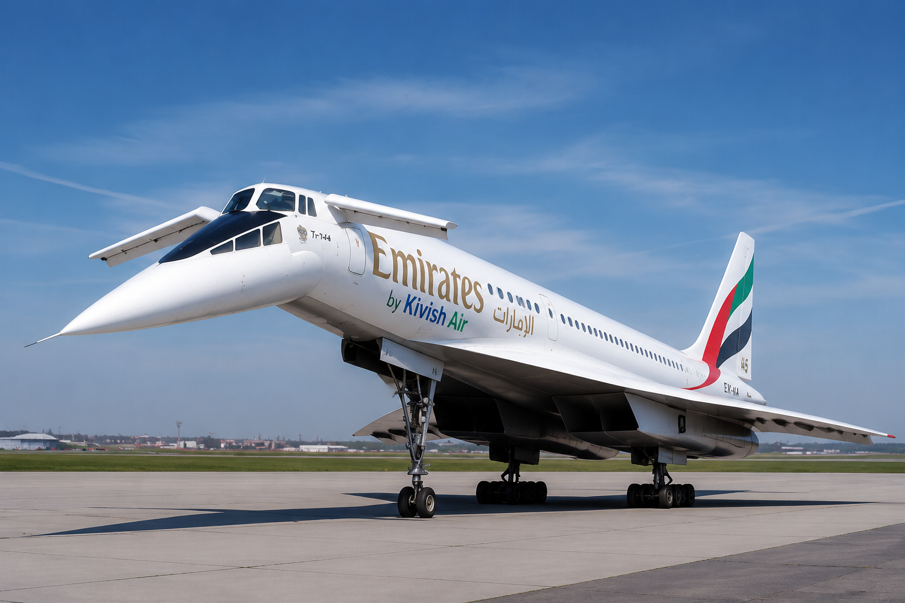

Ламьянский авиационный завод (ЛамьАЗ)
Ламьянский авиационный завод (ЛамьАЗ) — государственное авиационное предприятие Кивиша, открытое в 1985 году в городе Ламья. Завод специализируется исключительно на самолётах семейства Ту-144 и отвечает за их восстановление, модернизацию, испытания, двигательные программы и поддержание лётной годности.
ЛамьАЗ создавался не как массовый авиазавод, а как отдельный центр одной сложной программы. В отличие от Миатовского авиационного завода, связанного с Ту-154, предприятие в Ламье не получало других основных платформ и на протяжении всей своей истории сохраняло узкую специализацию на Ту-144.
Предпосылки создания
К началу 1980-х годов руководство СКР стремилось обеспечить самостоятельное будущее программы Ту-144. Эксплуатация небольшого парка требовала полного доступа к чертежам, ремонтной документации, результатам испытаний и производственным технологиям. Без собственной специализированной базы долгосрочное обслуживание самолётов зависело бы от решений и возможностей советских предприятий.
1 июля 1983 года СКР приобрёл у СССР все права и документацию по Ту-144 за 750 миллионов рублей. После сделки дальнейшее развитие самолёта стало внутренней программой СКР: советская сторона больше не контролировала лицензирование, модернизацию и выпуск новых элементов конструкции.
Полученный проект решили не передавать МиАЗу. Ту-154 уже формировал отдельную производственную школу на Сатали, тогда как сверхзвуковой самолёт требовал собственных стендов, испытательной базы, специалистов по двигателям, топливной автоматике, воздухозаборникам и теплонагруженной конструкции. Для этой задачи в Ламье начали создавать новый завод.
Открытие завода и первые работы (1985)
ЛамьАЗ начал работу в 1985 году. Первой задачей предприятия стало не строительство новой серии, а восстановление существующих самолётов и перенос всей технической ответственности за них внутрь СКР.
В том же году был подготовлен первый восстановленный Ту-144. На самолёте провели ремонт силовых установок и систем, а также усилили звукоизоляцию пассажирского салона. Успешное возвращение машины в воздух подтвердило, что завод способен самостоятельно обслуживать платформу и поддерживать её дальнейшую эксплуатацию.
Ограничение сверхзвука над сушей
В 1986 году ЛамьАЗ совместно с MIKOJI разработал автоматическую систему, не позволявшую Ту-144 переходить на сверхзвуковую скорость над сушей. Самолёт мог сохранять высокую околозвуковую скорость, однако полноценный сверхзвуковой режим разрешался только после выхода на морской участок маршрута.
Это решение стало одной из главных особенностей кивишской эксплуатации Ту-144. Завод не пытался отменить ограничения по шуму, а встроил их непосредственно в логику управления самолётом, снизив риск случайного превышения скорости над населённой территорией.
Переход к Kivish Air
После прекращения деятельности авиакомпании «Главный Полёт» в ноябре 1989 года эксплуатация Ту-144 перешла к Kivish Air. Для ЛамьАЗа смена перевозчика не означала остановку программы: завод сохранил техническую документацию, ремонтную базу и специалистов.
В 1990–1991 годах самолёты использовались на направлениях Кора — Москва и Кора — Пекин. Малый размер флота и высокая стоимость обслуживания делали программу ограниченной, но ЛамьАЗ продолжал поддерживать все машины как единый технический комплекс.
Первая собственная двигательная программа
В 1994 году завод начал разработку нового двигателя для дальнейшей эксплуатации Ту-144. Основной задачей было заменить постепенно устаревавшие силовые установки и обеспечить самолёту собственную кивишскую ремонтно-производственную базу.
В 1999 году ЛамьАЗ построил с нуля новый испытательный Ту-144. Самолёт предназначался только для заводских работ и не имел права перевозить обычных пассажиров. На нём испытывались двигатели UJT144KS, новые элементы управления и обновлённые системы.
Ту-144К
В 2002 году программа испытаний привела к появлению модификации Ту-144К. Самолёты получили новые двигатели, современную авионику, обновлённую кабину и переработанный пассажирский салон. При этом сохранялась исходная конструктивная основа Ту-144 и его характерная схема полёта: ограниченная скорость над сушей и сверхзвук над морем.
К 2009 году один самолёт был передан в музей, два продолжали регулярные рейсы в Москву и Пекин, а ещё один находился в хранении. В 2010 году хранившийся борт получил статус государственного и президентского резерва для чрезвычайных перевозок.
Ту-144КТ
В 2012 году испытательный самолёт 1999 года получил обозначение Ту-144КТ. Он использовался как отдельная летающая лаборатория для следующей программы двигателей. По своему юридическому статусу Ту-144КТ оставался испытательной машиной и не мог выполнять пассажирские рейсы.
Катастрофа испытательного борта 2014 года
В 2014 году во время первого лётного испытания новой силовой установки над Ламьянским регионом взорвались первый и второй двигатели. Самолёт был разрушен до выхода на сверхзвуковую скорость, погибли четыре члена испытательного экипажа.
Катастрофа относилась именно к экспериментальной двигательной программе. Регулярные Ту-144К продолжили полёты, поскольку на них сохранялись прежние сертифицированные двигатели UJT144KS.
Через месяц после происшествия Kivish Air изменила билетные терминалы на московском и пекинском направлениях. Пассажирам начали показывать назначенный самолёт, тип его двигателя и дату последнего обслуживания. Для двух регулярных машин указывались даты 6 и 8 мая 2014 года.
Новый планер и спасательная кабина
В 2015 году ЛамьАЗ собрал полностью новый планер Ту-144КТ. Испытания возобновились в 2016 году. Переднюю кабину нового самолёта выполнили как автоматически отделяемую спасательную капсулу.
При аварийном отделении кабина уходила в сторону от самолёта, после чего раскрывалась четырёхсекционная парашютная система. Управление запускалось специальным рычагом, установленным на месте прежнего рычага кислородных масок. Система предназначалась только для испытательного Ту-144КТ и не устанавливалась на пассажирские самолёты.
Двигатель SDSA144IK
В 2017 году испытания новой двигательной программы завершились. Серийная силовая установка получила обозначение SDSA144IK. На сверхзвуковой скорости она была слабее прежнего двигателя, однако для большинства маршрутов это не считалось решающим недостатком: над сушей самолёт всё равно не мог переходить звуковой барьер из-за автоматики 1986 года.
Было принято решение устанавливать SDSA144IK на все три эксплуатационных самолёта во время очередного крупного обслуживания. Первый вариант программы, известный как SAS144K, получил на заводе поговорку «Левой, правой, и вперёд, поспешил ты Хент Олой». Она использовалась как ироничное напоминание о слишком поспешных инженерных решениях.
Работа в 2020-е годы
В 2023 году Kivish Air приостановила маршрут Кора — Москва из-за войны, ограничений воздушного пространства и угрозы беспилотников. Завод и авиакомпания не стали рисковать редким самолётом. Пекинский маршрут продолжил работу, а освободившийся московский борт сохранялся в лётном состоянии.

В 2025 году самолёт был включён в программу сотрудничества Kivish Air с Emirates. Он получил временную окраску Emirates by Kivish Air и начал использоваться на согласованных международных маршрутах Emirates. При этом техническая ответственность за самолёт и его обслуживание оставалась за кивишской стороной и ЛамьАЗом.
В 2026 году самолёт программы Emirates и государственный Ту-144К получили расширенный доступ к международным аэропортам, сопоставимый с уровнем доступа Ту-154МК. После проверок ICAO, FAA и национальных авиационных властей серьёзных претензий к самому самолёту и его современным системам безопасности выявлено не было.
Основным ограничением оставался шум. Сверхзвуковые двигатели невозможно сделать полностью тихими, поэтому режим выше скорости звука по-прежнему допускался только на согласованных участках. При соблюдении этих условий стала формально возможна новая посадка Ту-144К в Нью-Йорке и расширение географии полётов по миру.
Производственная философия
ЛамьАЗ не является предприятием массовой сборки. Его работа строится вокруг нескольких конкретных самолётов, каждый из которых имеет отдельную историю ремонта, модернизаций и допуска к эксплуатации.
Основные направления деятельности завода:
- восстановление и капитальный ремонт Ту-144;
- модернизация авионики, салона и систем управления;
- разработка и сопровождение двигателей;
- постройка единичных испытательных планеров;
- проведение стендовых и лётных испытаний;
- поддержка регулярных, государственных и международных рейсов;
- хранение полного архива программы Ту-144.
Отличие от МиАЗа
МиАЗ развивал Ту-154 как долговечную дозвуковую платформу, постепенно меняя отдельные узлы и создавая новые эксплуатационные версии. ЛамьАЗ решал другую задачу: сохранить небольшой сверхзвуковой флот, для которого невозможно организовать обычное серийное производство.
Поэтому главным результатом работы ЛамьАЗа считается не количество построенных самолётов, а сохранение всей цепочки знаний: от чертежей и ремонта до новых двигателей, испытательных машин и допуска к международным полётам.
Состояние программы на 2026 год
- один Ту-144К выполняет регулярный маршрут Кора — Пекин;
- один Ту-144К работает в программе Emirates by Kivish Air;
- один Ту-144К используется как государственный и президентский резерв;
- один самолёт находится в музее Авиатронга;
- Ту-144КТ сохраняет статус испытательной машины и не входит в пассажирский флот.
Оценка и наследие
ЛамьАЗ стал редким примером предприятия, созданного не ради массового производства, а ради сохранения одной технологически сложной платформы. Завод пережил смену государства и перевозчика, несколько двигательных программ, гибель испытательного самолёта и сокращение регулярной сети, но к 2026 году продолжал поддерживать Ту-144 в реальной эксплуатации.
Благодаря ЛамьАЗу Ту-144 в Кивише не превратился исключительно в музейный самолёт. Он сохранился одновременно как регулярный лайнер, международный премиальный самолёт, государственный резерв и испытательная платформа.
См. также
Статья описывает историю Ламьянского авиационного завода и программы Ту-144 по состоянию на конец 2026 года.